Ismerjétek meg a verseny mögött álló szervezői csapatot!
/ Kik vagyunk?
A verseny szervezői gárdája egy fiatal önkéntesekből álló csapat, akik elkötelezettek amellett, hogy
lehetőséget teremtsenek a fiataloknak az informatika megismerésére. A szervezők közül többen
foglalkoznak informatikai karrierük mellett informatika oktatással, tehetséggondozással is.
Hisszük, hogy a manapság elterjedt oktatási módszerek nem megfelelőek arra, hogy az
informatikát vonzó és érdekes pályaként mutassák be, ezért a több mint tíz év informatikai oktatási
tapasztalatunkkal egy újfajta szemléletet szeretnénk elterjeszteni.
Ebben egy lépés ez a vetélkedő, ahol a résztvevők megtapasztalhatják, hogy egy programozó életében
felmerülő feladatok
izgalmasak és szórakoztatóak is tudnak lenni.
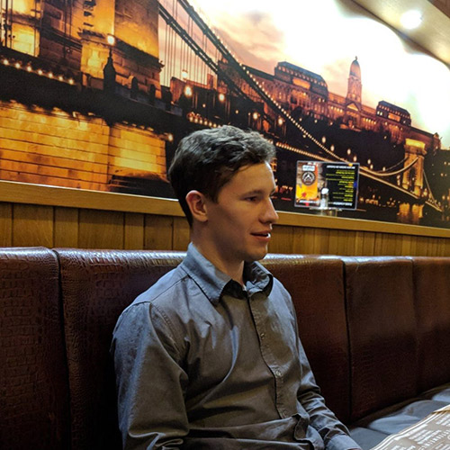
Weisz Ágoston
Főszervező
Weisz Ágoston vagyok, szoftverfejlesztő manager a Google-nél, Zürichben.
Középiskolás tanulmányaimat a Budapesti Fazekas Mihály Gyakorló Általános Iskola és
Gimnázium speciális matematika tagozatán végeztem, majd az ELTE MSc kutató matematikus
szakát végeztem el kitüntetéses diplomával. A Nemzetközi Informatikai Diákolimpián bronz
érmet nyertem, a Sapientia nemzetközi programozás versenyen csapat 1., a KPI-open nemzetközi
csapatversenyen két évben is harmadikok lettünk. 2013 óta minden évben miniszterelnöki
kitüntetést kaptam a sikeres oktatói munkám miatt - minden évben volt diákolimpikon
tanítványom.
Nagyon elkötelezett vagyok a diákok oktatása iránt, szeretnék minél több gyereknek
lehetőségeket teremteni az életben.
Szabadidőmben versenybringázok és síelek, illetve a Google Zürich focicsapatában játszok.
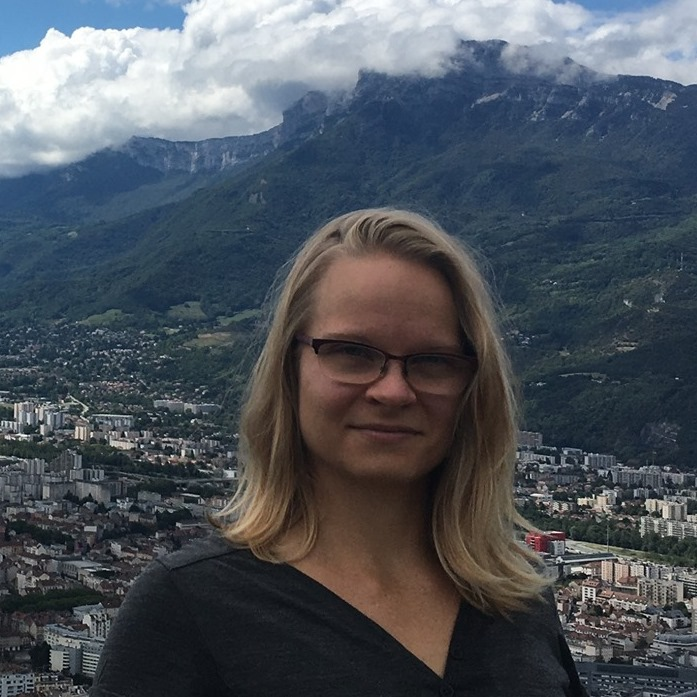
Szőke Nóra
Főszervező és back-end fejlesztő
Szőke Nóra vagyok, matematikus és webfejlesztő.
Fiatal korom óta szenvedélyem a matematika, középiskolásként számos matekversenyen értem el
kiemelkedő helyezést. A Budapesti Fazekas speciális matematika tagozatán érettségiztem, majd
tanulmányaimat az ELTE matematika szakán folytattam, ezt követően a svájci École
Polytechnique Fédérale de Lausanne egyetemen doktoráltam absztrakt algebrából. Pár évvel
később a kutató életmódot magam mögött hagytam, jelenleg webfejlesztőként dolgozom
Franciaországban.
A matematika művelése mellett mindig is nagyon érdekelt a tehetséggondozás és a tanítás.
2008 óta közreműködtem a Medve Szabadtéri Matematikaverseny elkészítésében és
lebonyolításában. A Matematika Összeköt Egyesület egyik alapító tagjaként már több, mint egy
évtizede foglalkozom matematika iránt érdeklődő gyerekek tanításával.
A matek és a programozás mellett sokat olvasok biológia és pszichológia témában, emellett
szabadidőmben leginkább mozogni szoktam: kedvenc sportjaim közé tartozik a túrázás,
wakeboard, falmászás és a rúdtánc.
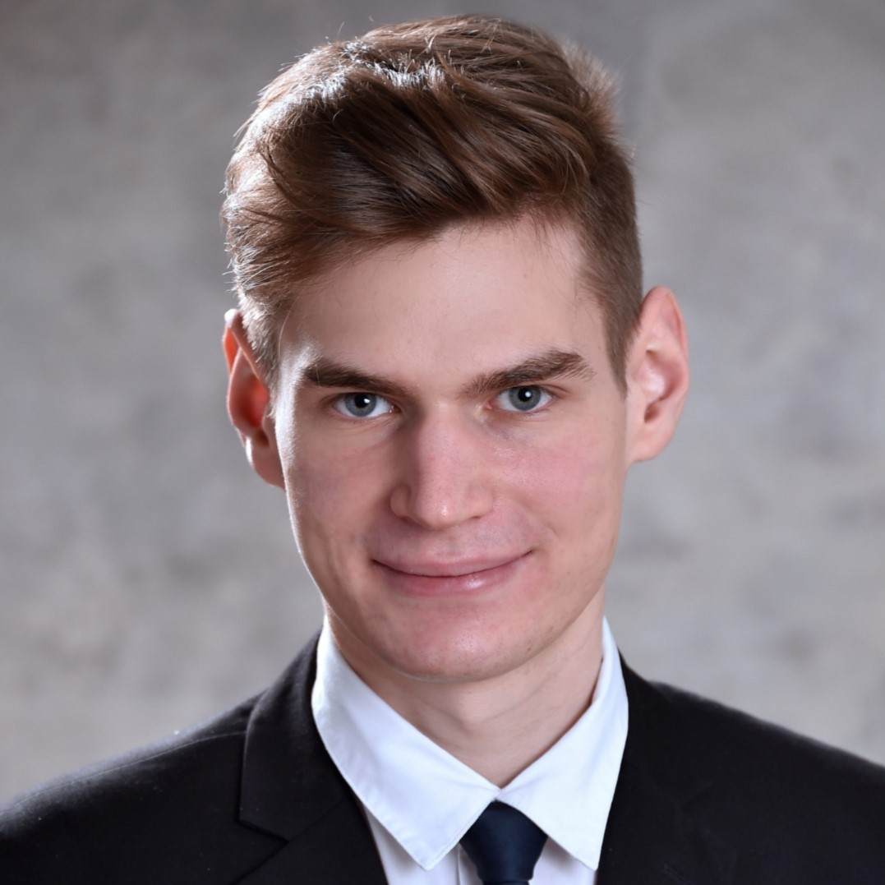
Szabó Kornél
Főszervező és front-end fejlesztő
Szabó Kornél vagyok, a Cambridge-i Egyetem
informatika szakos hallgatója.
Középiskolás tanulmányaimat a Budapesti Fazekas Mihály Gyakorló Általános Iskola és
Gimnázium speciális matematika tagozatán végeztem. Ezen évek alatt sokat foglalkoztam
versenyprogramozással és matematikaversenyekkel, a Nemzetközi Informatikai Diákolimpián
bronzérmes, a Közép-Európai Informatikai Diákolimpián bronzérmes, a Nemzetközi Matematikai
Diákolimpián bronzérmes, a Közép-Európai Matematikai Diákolimpián ezüstérmes lettem.
Magyar versenyeken is sikeresen szerepeltem, informatika OKTV-n 2., matematika OKTV-n 10.
helyezett lettem. Gimnáziumi éveim végén kezdtem az Alphacademyben tanítani, de korábban is
foglalkoztam tehetséggondozással, például a Pósa-táborokban történő segítősködéseim
alkalmával. Hobbijaim közé tartozik az olvasás, az evezés és a falmászás.
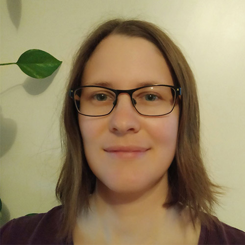
Bóra Eszter
Versenybizottsági tag
Bóra Eszter vagyok középiskolai matematika tanár és az ELTE-n PhD hallgató. Több mint 10 éve
foglalkozom tehetséggondozással a Gondolkodás Öröme Alapítványnál.
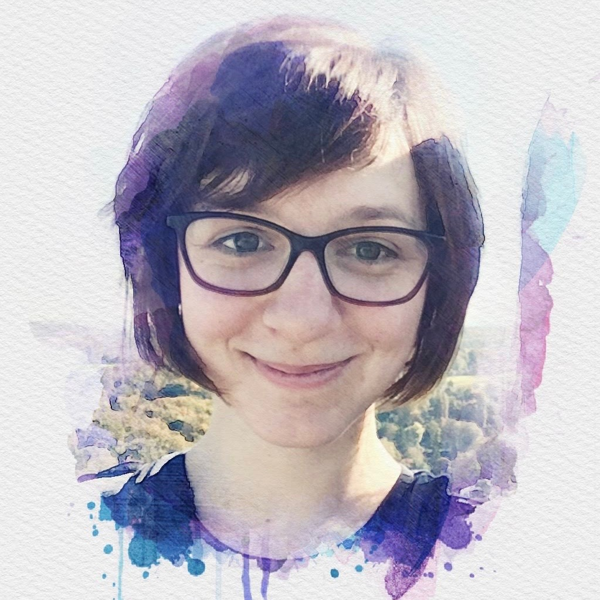
Csikós Mónika
Designer
Csikós Mónika vagyok, alkalmazott matematika /
elméleti informatika kutató a párizsi Diderot egyetemen. Tanulmányaimat Budapesten kezdtem az ELTE matematika szakán (BSc),
majd Párizsban folytattam informatika szakon (MSc & PhD).
Középiskolás éveimet főképp a sport töltötte ki, ezért tanulmányi versenyeken csak az
egyetemi éveim alatt, szervezőként vettem részt. A résztvevők lelkesedése és a versenyek
hangulata egyből elvarázsolt, így az utóbbi 6 évben több verseny szervezésében is
segítettem.
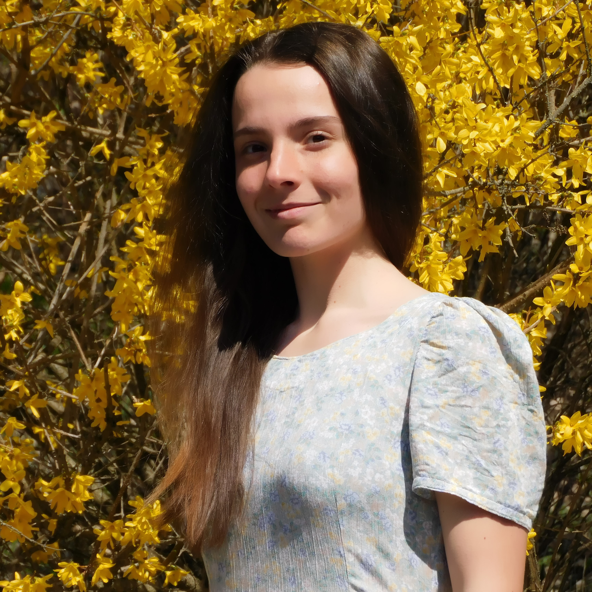
Győrffy Johanna
Design & PR
Győrffy Johanna vagyok, a Konstanzi Egyetem informatika szakos hallgatója. Középiskolai tanulmányaimat a Budapesti Fazekas Gimnáziumban végeztem speciális matematika tagozaton.
Gimnáziumi éveim alatt a matematika iránt érdeklődtem leginkább. Országos és nemzetközi versenyeken is jól szerepeltem, az Európai Lány Matamatikai Diákolimpián (EGMO) bronzérmes lettem. Nagyon szeretek tanítani, az egyetem mellett heti hat órában tartok matematika szakköröket egy általános iskolában.
Szabadidőmben sokat sportolok (evezek, futok, biciklizek, túrázok, táncolok), de a rajz, a fényképészet, a főzés és a kertészkedés is kedvenc hobbijaim közé tartoznak.
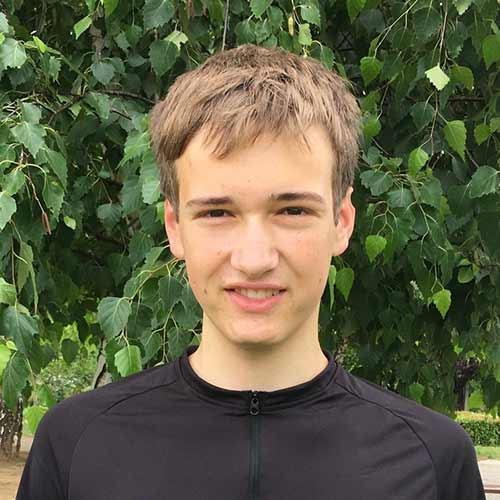
Nádor Benedek
Versenybizottsági tag
Nádor Benedek vagyok, a Budapesti Fazekas Mihály
Gyakorló Általános Iskola és Gimnázium speciális matematika tagozatán tanulok. Leginkább
matematikával és programozással foglalkozom, de sok más dolog is érdekel.
Segítőként részt veszek matektáborok szervezésében, tavaly osztálytársaimmal hatodikosoknak
tartottam
szakkört. Szabadidőmben zongorázok, evezek és szeretek térképeket nézegetni.
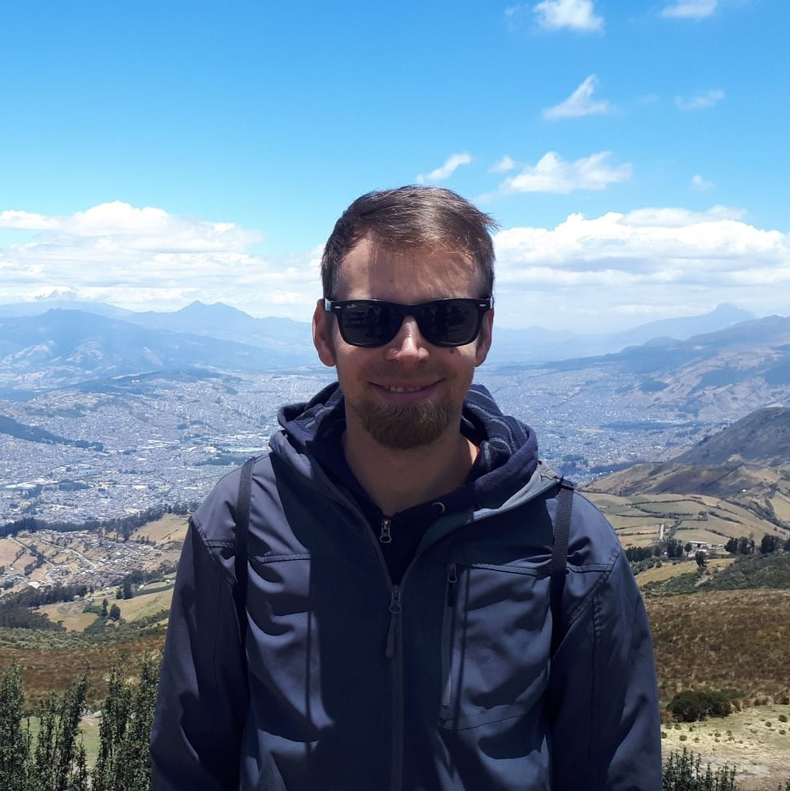
Nikházy László
A Versenybizottság elnöke
Nikházy László a Google-s és NNG-s pályafutása után
a PhD-jén dolgozik, ami a tehetséges gyerekek programozás oktatásáról szól. Matematika és
programozás táborokat vezet, az országos informatika versenyek szervezésében részt vesz, és
nemzetközi versenyekre viszi a fiatalokat.
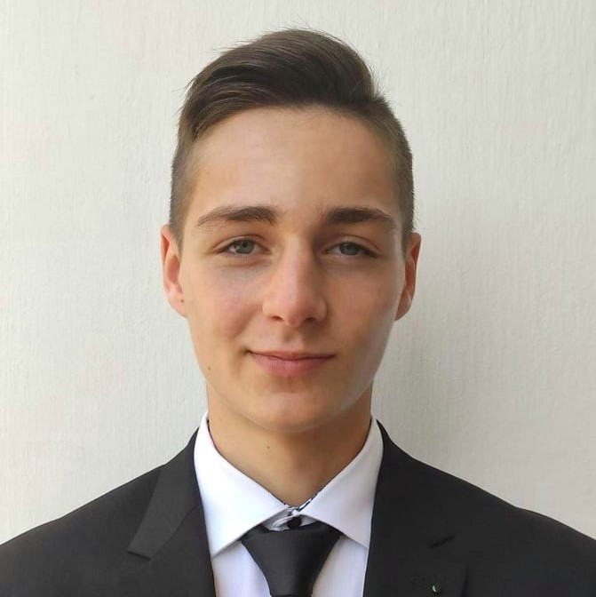
Molnár Gergely
Versenybizottsági tag
Molnár Gergely vagyok a győri SZC Jedlik Ányos Gépipari és Informatikai Technikum 11-es padjait koptatom. Szabadidőmben szeretek sportolni és programozni. 2021-es strandkézilabda magyar ifjúsági válogatott tagjaként képviseltem az országot az Európabajnokságon. Emellett java és C# programozási nyelvet tanulok és kisebb alkalmazások fejlesztésével foglalkozom. Ezen felül belemerültem a weblapszerkesztés világába is. Diáktársaimat fizikából és matematikából korrepetáltam céljaik elérésé érdekében. Ettől a ponttól kezdve döntöttem el, hogy tanítással szeretnék foglalkozni. Kezdetben nagymamákát és nagypapákat tanítottam a N@gyinet program keretében, majd kisebb gyerkőcök oktatására összpontosítottam. Úgy gondolom, hogy nagyon fontos a fiatalabb generációk oktatása. Remélem átadhatjuk a versenyzés örömét az idei versenyzőinknek és motiváljuk őket a további megmérettetések sikeres részvételében.
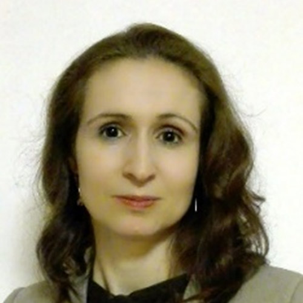
Szabó Ivett
Versenybizottsági tag
Vallom, hogy minden gyermekben fel lehet kelteni az érdeklődést a matematika és a
programozás iránt.
A tanulás során megszerzett ismereteiket a gyerekek hasznosítani tudják életük minden
szakaszában, így érdemes minél korábban elkezdeni.
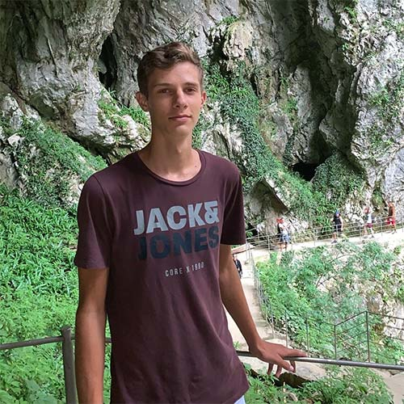
Tiszay Dávid
A Szakmai Bizottság tagja
Tiszay Dávid vagyok, az ELTE programtervező informatikus szakos hallgatója.
Középiskolai tanulmányaimat a Budapesti Fazekas Gimnáziumban végeztem speciális matematika
tagozaton. Tagja voltam a Pósa-tábor sorozatnak, ahol egyedi gondolkodásmódot tanultam,
egyenesen Magyarország egyik legnagyobb matematikusától. Az évek során sokat foglalkoztam
versenyprogramozással, számos matematika és programozóversenyen értem el helyezést. Az
Alphacademyben gimnáziumi éveim végén kezdtem el tanítani, de már korábban is tartottam
szakkört matek tagozatos diákoknak. Szabadidőmben sokat sportolok (országúti kerékpár,
tenisz), illetve stratégiai társasjátékokat játszom.
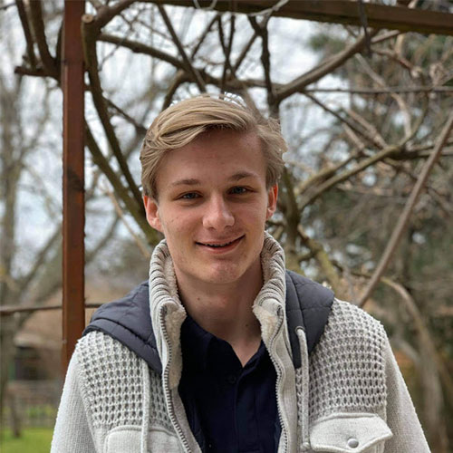
Tóth Gellért
A Szakmai Bizottság tagja
Tóth Gellért vagyok, a hollandiai Radboud University elsőéves hallgatója, ahol Artificial
Intelligence-t tanulok. Az Óbudai Árpád Gimnázium matematika szakán végeztem. Mindig is a
programozás érdekelt a legjobban, és az abba fektetett extra idő meghozta a gyümölcsét. A
2021-es nemzetközi informatika diákolimpián és a 2020-as közép-európai informatika
diákolimipán ezüstérmes lettem, magyar vonatkozásból pedig az OKTV 4. helyemre lehetek
büszke.
A diákolimpia után keresett meg Ágoston, hogy szeretnék-e informatikaoktatással foglalkozni.
Korábbi tapasztalatokkal is rendelkezem tanítás terén, mentoráltam vidéki diákokat
matematikából és a saját iskolámban egyik osztálytársammal informatika szakkört vezettünk.
Várkonyi Zsombor
A Szakmai Bizottság tagja
Várkonyi Zsombor vagyok, az Eötvös Loránd Tudományegyetem elsőéves matematika szakos
hallgatója. Középiskolás éveimben a Budapesti Fazekas speciális matematika tagozatára
jártam, itt is érettségiztem 2021-ben. A matematika mellett mindig is érdekelt a
programozás, azonban komolyabb versenyeken matekból voltam. Hazai versenyek közül az OKTV 3.
kategóriájában 5. és 2. lettem, emellett képviseltem az országot a Közép-Európai Matematikai
Olimpián (MEMO), ahol aranyérmet nyertem és a Nemzetközi Matematikai Diákolimpián (IMO),
ahol ezüstöt. Nagyon szeretek tanítani, már 5 éve vagyok matektáborok önkéntes szervezője,
az Alphacademy-hez 2021 elején csatlakoztam. Szabadidőmben általában sportolni, olvasni,
kirándulni vagy a barátaimmal társasjátékozni szoktam.
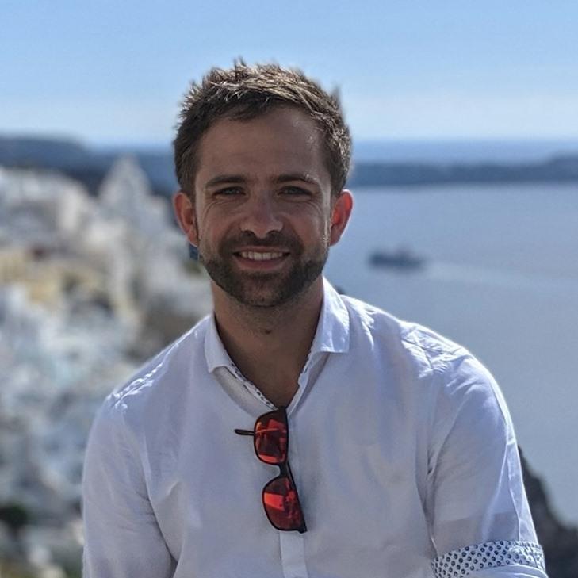
Veress Krisztián
Versenybizottsági tag
Veress Krisztián vagyok, ex-Googler, business
coach és vállalatfejlesztési tanácsadó.
Tanulmányaimat Szegeden kezdtem, elvégeztem a programtervező matematikus MSc-t és a műszaki
informatikus MSc-t operációkutatás és párhuzamos rendszerek szakirányokon. Mindezek alatt
demonstrátorként is dolgoztam, számos kurzus gyakorlatait több évig tartottam, 300+
egyetemistának.
Folytattam az Informatika Doktori Iskolával, amely során egy vezetéknélküli szenzorhálózat
tematikájú kutatásfejlesztésbe kapcsolódtam be. Három évvel később felvettek a svájci
Google-be szoftverfejlesztőnek.
A Google-ben szervezeti hatékonyságnöveléssel, verifikációs és tesztrendszerek
fejlesztésével, nagy rendelkezésre állású és alacsony válaszidejű magasan skálázódó
rendszerek tervezésével, kivitelezésével és fenntartásával foglalkoztam.
A Google-ből 8 év után váltottam, két újabb diploma (MBA - Swiss Business School, Executive
MBA - Quantic School of Business and Technology) megszerzése után.
A közgazdasági, elemzői és pénzügyi tudásommal kiegészítve jelenleg business coach-ként,
szervezeti hatékonyságnöveléssel és vállalatfejlesztési tanácsadással szakértőként
foglalkozok.
Üzenj nekünk!
Ha bármilyen kérdésed van a versennyel kapcsolatban vagy szívesen támogatnál minket, bátran keress
meg minket emailen vagy küldj üzenetet az alábbi mezők segítségével!